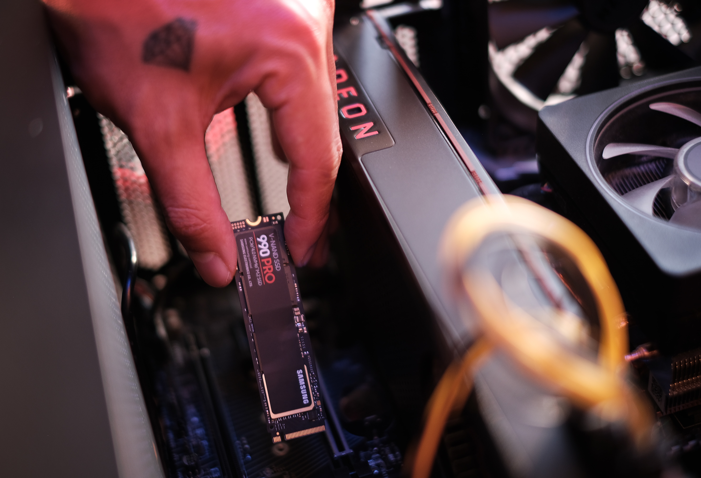

Article
Collection of articles, click below :

Correct Computer Assembly Steps
If you want to assemble your own computer, we need to know the steps. Oh yes, before that we have to understand the preparations before assembling a computer that has been described in the previous article ....
Read More >>

How to Make a Simple Blog Template
The blog template is the heart of a blog. It regulates the design and features of a blog. In this guide, we will learn to create a blog template with the following minimum ....
Read More >>

Logo Design is More Attractive And Easy With CorelDraw
Many want to learn to edit using Corel Draw but don't know where to start. It is indeed confusing if you want to learn something that was previously unknown, especially if you are self-taught ....
Read More >>